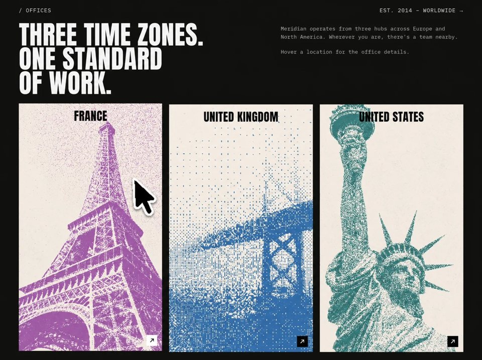

Worldwide Hubs
Businessbusinessyilai-ai 公开页面
收录时间：2026-08-14正文：11,106 字符

本地预览图 · jpeg
完整提示词
Build a single-page, full-viewport (non-scrolling on desktop) dark "Offices" landing
page for a fictional studio called **Meridian**. Three files only: `index.html`,
`styles.css`, `script.js` — no frameworks, no build step, no dependencies beyond
Google Fonts. Vanilla JS in an IIFE.
## Document
- `<html lang="en">`, `<meta charset="UTF-8">`, viewport `width=device-width, initial-scale=1.0`.
- `<title>Meridian — Offices</title>`
- Fonts via Google Fonts, with `preconnect` to `https://fonts.googleapis.com` and
`https://fonts.gstatic.com` (crossorigin), then:
`https://fonts.googleapis.com/css2?family=Anton&family=IBM+Plex+Mono:wght@400;500&display=swap`
- **Anton** = display face (headline + country names). **IBM Plex Mono** = everything else.
Fallbacks: `"Anton", Impact, "Arial Narrow", sans-serif` and
`"IBM Plex Mono", "Courier New", monospace`.
## Structure (exact)
`<main class="offices">` containing three blocks in a vertical flex column:
1. `<header class="offices__top">` — flex, `justify-content: space-between`,
`align-items: baseline`:
- `<p class="offices__label" data-type>/ OFFICES</p>`
- `<a class="offices__meta" href="#" data-type>EST. 2014 — WORLDWIDE →</a>` (em dash, → arrow)
2. `<section class="offices__intro">` — 2-col grid `minmax(0,1.15fr) minmax(0,0.85fr)`,
`align-items: start`, gap `clamp(1rem, 3vw, 3.5rem)`:
- `<h1 class="offices__headline appear-text">` with hard `<br />` line breaks:
`THREE TIME ZONES.` / `ONE STANDARD` / `OF WORK.`
- `<div class="offices__copy">` (`justify-self: end`, `max-width: 28rem`) with two
`data-type` paragraphs:
- "Meridian operates from three hubs across Europe and North America. Wherever you are, there's a team nearby." (curly apostrophe ’)
- `<p class="offices__hint" data-type>Hover a location for the office details.</p>`
3. `<section class="offices__grid" aria-label="Office locations">` — 3 equal columns,
fills remaining height (`flex: 1 1 auto; min-height: 0`), gap `clamp(0.65rem, 1.4vw, 1.2rem)`.
Three `<article class="location appear" data-location="…">` cards, each with a
staggered `style="--appear-delay: …"`:
- `france` — 0ms — name **FRANCE**
- `uk` — 110ms — name **UNITED KINGDOM**
- `usa` — 220ms — name **UNITED STATES**
Each card contains, in order:
- `<div class="location__media" aria-hidden="true" style="background-image: url('…')">`
(absolutely positioned `inset: 0`, `background-size: cover`, `center`, `no-repeat`,
`background-color: #8a8a8a` as the pre-load fill)
- `<h2 class="location__name">` — absolutely positioned, top `clamp(0.7rem, 1.4vh + 0.4vw, 1.25rem)`,
horizontally centered via `left: 50%; transform: translateX(-50%)`, `z-index: 2`,
`width: max-content`, `max-width: calc(100% - 1.25rem)`, Anton, `clamp(1.7rem, 1.8vw + 0.8vh, 2.65rem)`,
`line-height: 1`, `letter-spacing: 0.02em`, uppercase, color `#111`, `pointer-events: none`.
- `<button class="location__arrow" type="button" aria-label="Open <Country> office details">`
containing an inline SVG `viewBox="0 0 16 16" width="14" height="14" aria-hidden="true"`
with a single north-east arrow path:
`<path d="M4 12 L12 4 M6 4 H12 V10" fill="none" stroke="currentColor" stroke-width="1.6" stroke-linecap="square" stroke-linejoin="miter" />`
### Exact image URLs (use verbatim, HTML-escape the `&` as `&` inline)
- FRANCE:
`https://images.higgs.ai/?default=1&output=webp&url=https%3A%2F%2Fd8j0ntlcm91z4.cloudfront.net%2Fuser_38xzZboKViGWJOttwIXH07lWA1P%2Fhf_20260810_144125_d6c4439a-d2b8-45eb-818e-04ebeda059f4.png&w=1280&q=85`
- UNITED KINGDOM:
`https://images.higgs.ai/?default=1&output=webp&url=https%3A%2F%2Fd8j0ntlcm91z4.cloudfront.net%2Fuser_38xzZboKViGWJOttwIXH07lWA1P%2Fhf_20260810_144322_1c205cf9-d924-4e77-92c5-a1ef9a819f0b.png&w=1280&q=85`
- UNITED STATES:
`https://images.higgs.ai/?default=1&output=webp&url=https%3A%2F%2Fd8j0ntlcm91z4.cloudfront.net%2Fuser_38xzZboKViGWJOttwIXH07lWA1P%2Fhf_20260810_144331_e146bba1-a2ff-4b71-a4d7-55c05d177b19.png&w=1280&q=85`
Load `script.js` with a plain `<script src="script.js"></script>` at the end of `<body>`.
## CSS tokens (`:root`)
```
--bg: #13120D; --text: #f5f5f5; --muted: #b8b8b8;
--card-frame: #eceae4; --card-fill: #8a8a8a;
--arrow-bg: #0a0a0a; --arrow-fg: #ffffff;
--font-display / --font-mono as above
--pad-y: clamp(0.9rem, 2.2vh, 1.75rem);
--pad-x: clamp(1rem, 4.5vw, 4rem);
--gap-main: clamp(0.75rem, 2.4vh, 1.75rem);
```
## CSS rules
- `html, body { height: 100%; overflow: hidden; }`. Body: `--bg` background, `--text` color,
mono font, `-webkit-font-smoothing: antialiased`, `text-rendering: optimizeLegibility`.
- `a { color: inherit; text-decoration: none; }`;
`button { font: inherit; border: 0; background: none; cursor: pointer; color: inherit; }`
- `.offices`: `height: 100vh` then `height: 100dvh`, padding `var(--pad-y) var(--pad-x)`,
`display:flex; flex-direction:column; gap: var(--gap-main); overflow:hidden`.
- `.offices__label, .offices__meta`: mono, `clamp(0.65rem, 0.95vw + 0.2vh, 0.8125rem)`,
weight 400, `letter-spacing: 0.08em`, uppercase, `--text`.
`.offices__meta` transitions `opacity .2s ease`; hover → `opacity: .7`.
- `.offices__headline`: Anton, weight 400, `clamp(1.85rem, 4.6vw + 1vh, 5rem)`,
`line-height: 0.92`, `letter-spacing: 0.01em`, uppercase.
- `.offices__copy p`: mono, `clamp(0.7rem, 0.9vw + 0.25vh, 0.9rem)`, `line-height: 1.5`,
`letter-spacing: 0.01em`, color `--muted`. `.offices__hint { opacity: .9 }`.
Copy column also gets `padding-top: clamp(0.15rem, 0.6vh, 0.5rem)` and internal
`gap: clamp(0.75rem, 2vh, 1.5rem)`.
- `.location`: `position: relative; height: 100%; min-height: 0;`
`background: var(--card-frame); overflow: hidden; isolation: isolate;`
`transition: transform .35s ease`. Hover → `translateY(-3px)`.
- `.location__arrow`: absolute, right & bottom `clamp(0.55rem, 1vh + 0.3vw, 0.9rem)`,
`z-index: 2`, square `clamp(1.65rem, 2vh + 0.6vw, 2.15rem)`, `display: grid; place-items: center`,
bg `--arrow-bg`, fg `--arrow-fg`, `transition: background .2s ease, color .2s ease, transform .2s ease`.
Inner svg `display: block; width: 55%; height: 55%`.
Inverts on **card** hover *or* button hover → `background: #fff; color: #111`;
button hover additionally `transform: translate(1px, -1px)`.
## Animations
**A. Headline fade-up** — `.appear-text` starts `opacity: 0; transform: translateY(10px)`
with `transition: opacity .7s ease, transform .7s ease`; `.is-visible` → `opacity: 1; translateY(0)`.
**B. Card stagger** — `.location.appear` starts `opacity: 0; translateY(18px)`,
`transition: opacity .65s ease, transform .65s ease`, `transition-delay: var(--appear-delay, 0ms)`.
`.is-visible` → visible. Also add `.location.appear.is-visible:hover { transform: translateY(-3px) }`
so hover lift still works after reveal.
**C. Typewriter for mono text only** (never the Anton headline — it looks wrong).
Ghost/live two-layer technique so layout never shifts:
- `[data-type] { position: relative }`
- `[data-type] .type-ghost { display: block; white-space: pre-wrap }` — reserves the space
- `[data-type] .type-live { position: absolute; inset: 0; white-space: pre-wrap }` — the animated text
- `[data-type].is-ready .type-ghost { visibility: hidden }`
- Blinking caret: `[data-type].is-typing .type-live::after` — `content: ""`, `display: inline-block`,
`width: 0.45ch`, `height: 1.05em`, `margin-left: 1px`, `vertical-align: -0.15em`,
`background: currentColor`, `opacity: .85`, `animation: caret-blink .9s steps(1) infinite`.
`[data-type].is-done .type-live::after { display: none }`.
- `@keyframes caret-blink { 0%,48% { opacity: .85 } 49%,100% { opacity: 0 } }`
**Reduced motion** — `@media (prefers-reduced-motion: reduce)`: `.appear-text` and
`.location.appear` become `opacity: 1; transform: none; transition: none`; the caret
pseudo-element is `display: none; animation: none`.
## script.js behavior
Self-invoking IIFE. Read `reduceMotion` once from
`matchMedia("(prefers-reduced-motion: reduce)").matches`. Helper `sleep(ms)` promise.
`prepareTypeElement(el)`:
- Collapse whitespace: `el.textContent.replace(/\s+/g, " ").trim()` → `text`
- Empty the element, add class `is-ready`
- Append `<span class="type-ghost" aria-hidden="true">` holding the full `text`
- Append empty `<span class="type-live" aria-hidden="true">`
- Set `el.setAttribute("aria-label", text)` so screen readers get the full string
- Return `{ el, text, live }`
`typeElement(item, speed = 18)` — async:
- If reduced motion: dump full text into `live`, add `is-done`, return.
- Else add `is-typing`, clear `live`, then loop char by char setting
`live.textContent = text.slice(0, i + 1)`, awaiting `speed` ms — but only
`speed * 0.35` ms after a space character (spaces fly by). Finally remove
`is-typing`, add `is-done`.
`reveal(selector)` — add `is-visible` to every match.
`run()` sequence:
1. Prepare `.offices__label`, `.offices__meta`, and all `.offices__copy [data-type]`.
2. Reduced motion path: type everything at once via `Promise.all`, reveal
`.appear-text` and `.location.appear`, return.
3. Normal path:
- `Promise.all([typeElement(label, 22), typeElement(meta, 16)])` — both top labels
type simultaneously at different speeds.
- `await sleep(80)` → `reveal(".appear-text")` (headline fades up).
- `await sleep(180)`, then type each copy paragraph **sequentially** at speed `14`,
`await sleep(90)` between them.
- Finally `reveal(".location.appear")` — the three cards fade up with their 0/110/220ms stagger.
Bind with: if `document.readyState === "loading"`, run on `DOMContentLoaded` `{ once: true }`,
otherwise call `run()` immediately.
## Responsive
- `@media (max-width: 900px)`: re-enable scrolling (`html, body { overflow: auto }`),
`.offices` → `height: auto; min-height: 100vh/100dvh; overflow: visible`;
`.offices__intro` → single column, `gap: 1rem`; `.offices__copy` → `justify-self: start; max-width: 36rem`;
`.offices__grid` → single column, `flex: none`, `max-width: 28rem`, `gap: .85rem`;
`.location` → `height: auto; aspect-ratio: 4 / 5; min-height: 280px`.
- `@media (max-width: 560px)`: `.offices__top` stacks (`flex-direction: column; align-items: flex-start; gap: .35rem`);
headline → `clamp(2.1rem, 11vw, 3.2rem)`.
- `@media (max-height: 700px) and (min-width: 901px)`: headline → `clamp(1.85rem, 6.5vh, 3.75rem)`;
`.offices__copy` gap `.7rem`; copy `font-size: .72rem; line-height: 1.4`.
## Look & feel target
Editorial brutalist. Near-black `#13120D` field, off-white cream cards that bleed
edge-to-edge in a 3-up grid filling the lower two thirds, massive condensed Anton
headline top-left, small monospaced meta type that types itself in on load with a
blinking block caret, and a tiny black square NE-arrow button in each card's bottom-right
that flips to white on card hover.把上面的提示词完整复制到支持长文本的 AI 工具中，再按需要替换品牌名、配色与文案。提示词描述的是整页结构与动效节奏，生成后建议在真实浏览器里检查首屏加载和移动端表现。
来源与版权
该条目来自公开提示词页面，原始出处信息未随页面提供。
提示词文本与预览素材的版权归原作者或原平台所有，本站仅作索引与归档。若你是权利人并希望移除本条内容，请通过联系方式告知。
同分类提示词
暂无同分类条目。